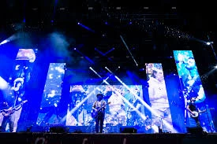
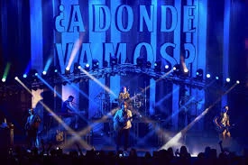
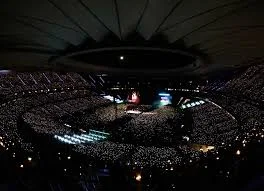
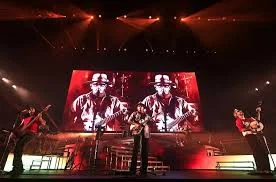
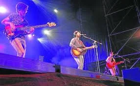

Ultimas Fotos
Fotos del ultimo concierto en Murcia, España






Bogotá, Colombia - Pop Rock - Desde 2011
Morat es una banda de cuatro amigos que decidieron
convertir sus emociones en canciones.Lo que pasa con Morat
es que no solo hacen canciones, cuentan historias que todos
hemos vivido. Son cuatro amigos que lograron ponerle palabras
a esos sentimientos que a veces uno no sabe ni cómo explicar.
Su música tiene algo especial: te acompaña en todo el proceso
cuendo estas bien o cuando estas mal.
Tienen esa letra perfecta para cuando estás superando un amor
que duele, pero también la melodía ideal para cuando extrañas
a alguien con todas tus fuerzas. Es como si cada acorde te
entendiera; pasas de las ganas de llorar a sentir esperanza en
una sola canción. Al final, escucharlos se siente como una conversacion
sincera que te llega directo al corazon porque se nota que escriben
desde lo que sienten de verdad.

Año de formación
Álbumes de estudio
Integrantes
Oyentes mensuales
No te pierdas las próximas fechas de Morat en directo.
| Fecha | Ciudad | Recinto |
|---|---|---|
| 15 Jun 2025 | Madrid | WiZink Center |
| 22 Jun 2025 | Barcelona | Palau Sant Jordi |
| 30 Jun 2025 | Bogotá | Movistar Arena |
| 10 Jul 2025 | Ciudad de México | Foro Sol |
Fotos del ultimo concierto en Murcia, España




